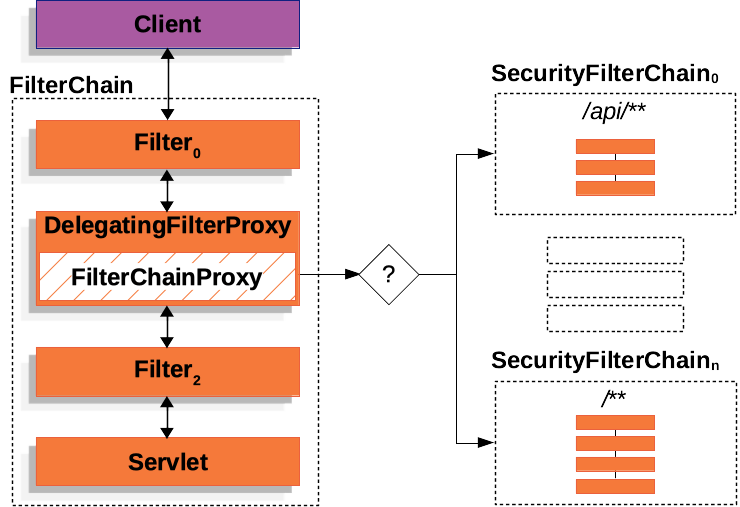

Spring Security Architecture
Spring Security Architecture
Spring Security architecture diagram:

Filter Chain
Spring Security’s Servlet support is based on Servlet Filters.
Servlet Filter Interface:
1 | public interface Filter { |
The filter chain is responsible for processing incoming requests and applying security rules. It consists of a series of filters that can be configured to handle authentication, authorization, and other security-related tasks.
1 | public interface FilterChain { |
DelegatingFilterProxy
The DelegatingFilterProxy implements jakarta.servlet.Filter interface and delegates the filtering work to spring managed beans. This allows you to define your filters as Spring beans and have them participate in the Spring lifecycle, including dependency injection and configuration.
DelegatingFilterProxy psuedocode:
1 | public void doFilter(ServletRequest request, ServletResponse response, FilterChain chain) { |
FilterChainProxy
FilterChainProxy is a special Filter provided by Spring Security that allows delegating to many Filter instances through SecurityFilterChain. Since FilterChainProxy is a Bean, it is typically wrapped in a DelegatingFilterProxy.
FilterChainProxy psuedocode:
1 | public class FilterChainProxy extends GenericFilterBean { |
SecurityFilterChain
SecurityFilterChain is used by FilterChainProxy to determine which Spring Security Filter instances should be invoked for the current request.
1 | public interface SecurityFilterChain { |
DefaultSecurityFilterChain is a standard implementation of SecurityFilterChain that matches requests based on a RequestMatcher and provides a list of filters to apply.
1 | public final class DefaultSecurityFilterChain implements SecurityFilterChain, BeanNameAware, BeanFactoryAware { |
FilterChainProxy decides which SecurityFilterChain should be used. Only the first SecurityFilterChain that matches is invoked.
SecurityFilter
The Security Filters are inserted into the FilterChainProxy with the SecurityFilterChain API. Those filters can be used for a number of different purposes, like exploit protection, authentication, authorization, and more. The filters are executed in a specific order to guarantee that they are invoked at the right time, for example, the Filter that performs authentication should be invoked before the Filter that performs authorization.
These security filters are most often declared using an HttpSecurity instance.HttpSecurity provides a convenient way to configure the security filters and their order.
1 |
|
The above configuration will add the following filters to the filter chain in the order they are declared:
- CsrfFilter
- AuthorizationFilter
- BasicAuthenticationFilter
- UsernamePasswordAuthenticationFilter
Add custom filter
You can also add custom filters to the filter chain using the HttpSecurity API. For example, to add a custom filter before the BasicAuthenticationFilter:
Example LoggingFilter:
1 | public class LoggingFilter extends OncePerRequestFilter { |
Add LoggingFilter after CsrfFilter:
1 | http.addFilterAfter(new LoggingFilter(), CsrfFilter.class); |
This will add the LoggingFilter after the CsrfFilter in the filter chain.
HttpSecurity comes with three methods for adding filters:
- #addFilterBefore(Filter, Class<?>) adds your filter before another filter
- #addFilterAfter(Filter, Class<?>) adds your filter after another filter
- #addFilterAt(Filter, Class<?>) replaces another filter with your filter
Handling Security Exceptions
Spring Security by default provides an ExceptionTranslationFilter that handles any AccessDeniedException or AuthenticationException thrown by the filters in the filter chain. You can customize the behavior of this filter by providing your own implementation of the AccessDeniedHandler or AuthenticationEntryPoint.
ExceptionTranslationFilter pseudocode
1 | try { |
Logging
To debug and understand the filter chain, you can enable TRACE level logging for Spring Security. This will provide detailed information about the filters being invoked and the security decisions being made.
Configuration for Spring Security logging:
1 | logging.level.org.springframework.security=TRACE |